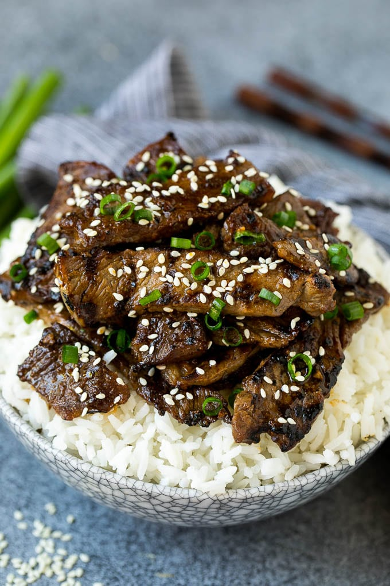

Beef Bulgogi

Succulent, juicy beef bulgogi!
Beef bulgogi oh my goodness! Perfectly paired with fluffy white rice.
Ingredients
- 2 pounds steak
- 5 tablespoons soy sauce
- 2 tablespoons brown sugar
- 1 1/2 tablespoons toasted sesame oil
- 2 teaspoons minced garlic
- 2 teaspoons minced ginger
- 1 tablespoon Korean gochujang sauce
- 1/4 teaspoon black pepper
- 2 teaspoons sesame seeds
- 1/4 cup green onions sliced
Steps
- Place the soy sauce, brown sugar, toasted sesame oil, Asian pear, garlic, ginger, gochujang sauce and black pepper in a bowl. Stir to combine.
- Add the steak to the bowl and toss to coat evenly. Cover and refrigerate for at least one hour, or up to 24 hours
- Preheat a grill or indoor grill pan over medium high heat. Remove the meat from the marinade, scraping off any large chunks of garlic or pear.
- Place the meat in a single layer on the grill and cook for 2-3 minutes per side.
- Alternatively, you can cook the meat in a skillet on the stove top for 2-3 minutes per side.
- Sprinkle the sesame seeds and green onions over the meat, then serve.